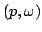
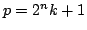
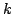
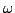
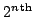
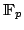
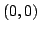

Usage
fourierPrime n
Signature
fourierPrime: MachineInteger (MachineInteger,MachineInteger)
Returns
Returns  such thatis a prime of the form  with  odd, and  is a primitive  root of unity in . Returns  if
is too large.